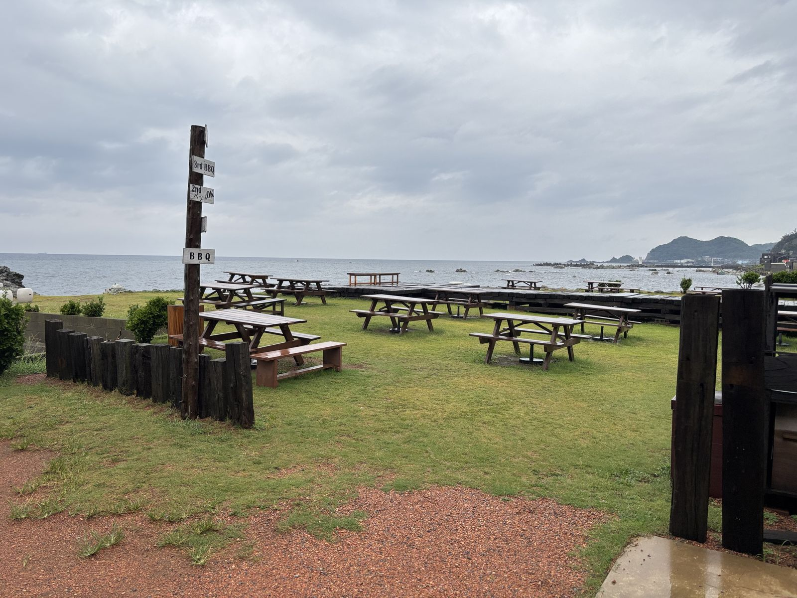
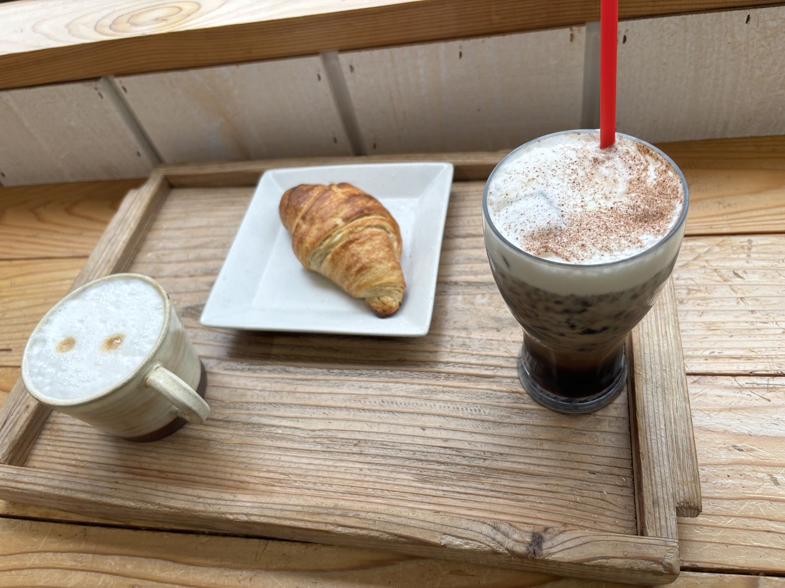
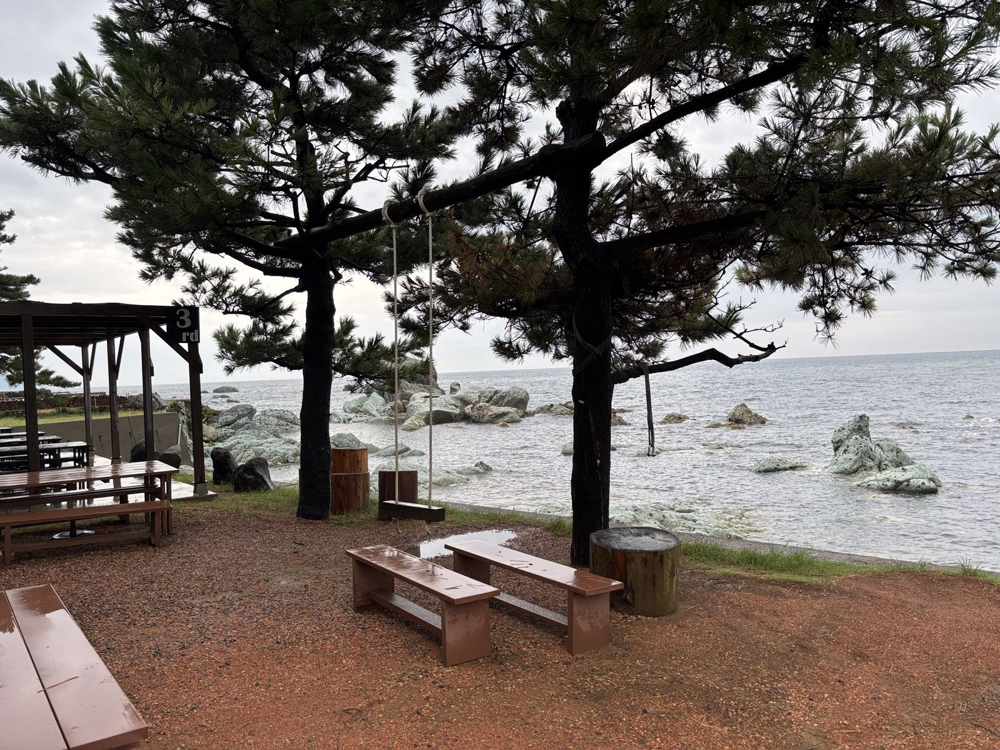
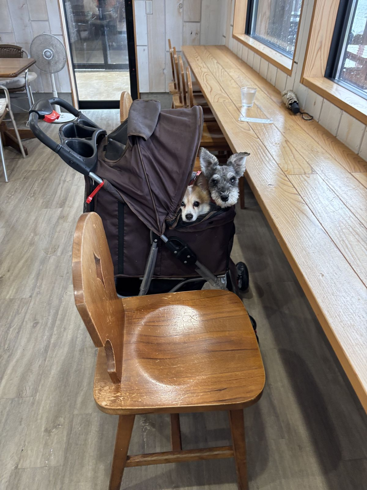
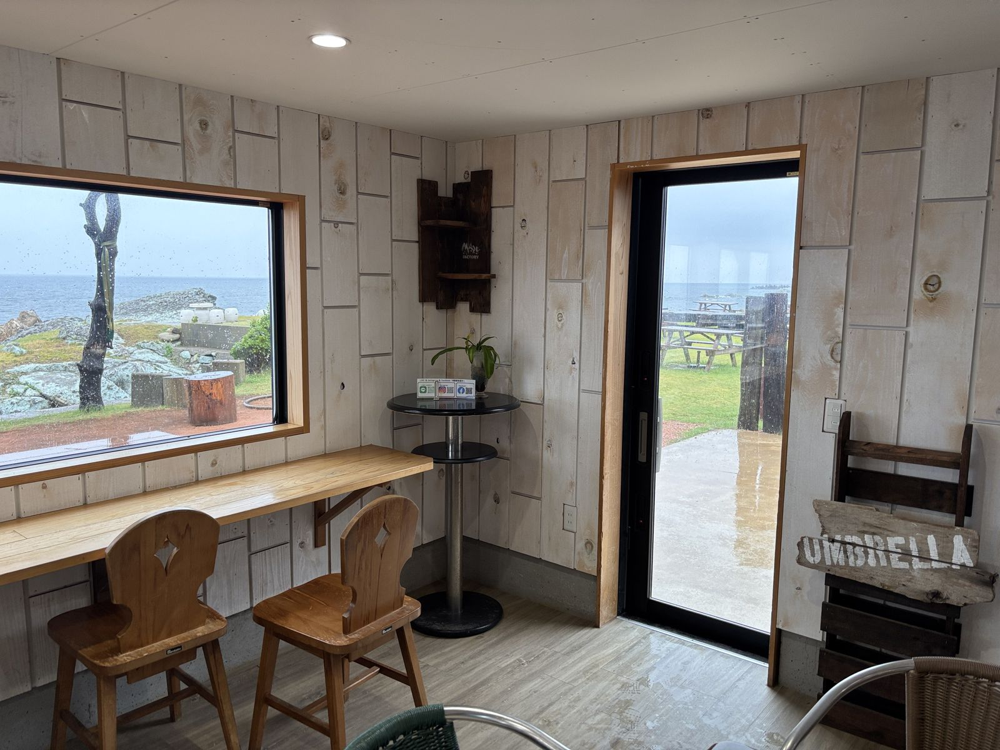
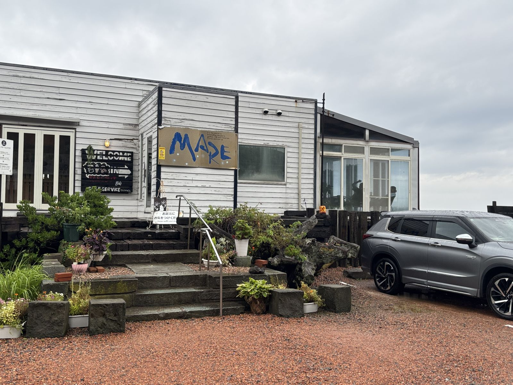

cafe MARE（福井市大丹生町）
CONCEPT
越前海岸沿い、風光明媚なロケーションに立つ一軒のカフェ。 店内奥のデッキは海へと続き、松の木越しに日本海の景色を眺めながらコーヒーを楽しめます。 ペットと一緒に入店できるのも嬉しいポイントです。
MENU
カフェタイムはカプチーノ・アイスラテ・クロワッサンなどのドリンク＆軽食メニューも豊富。詳しい価格は店頭でご確認ください。
GALLERY




INFO